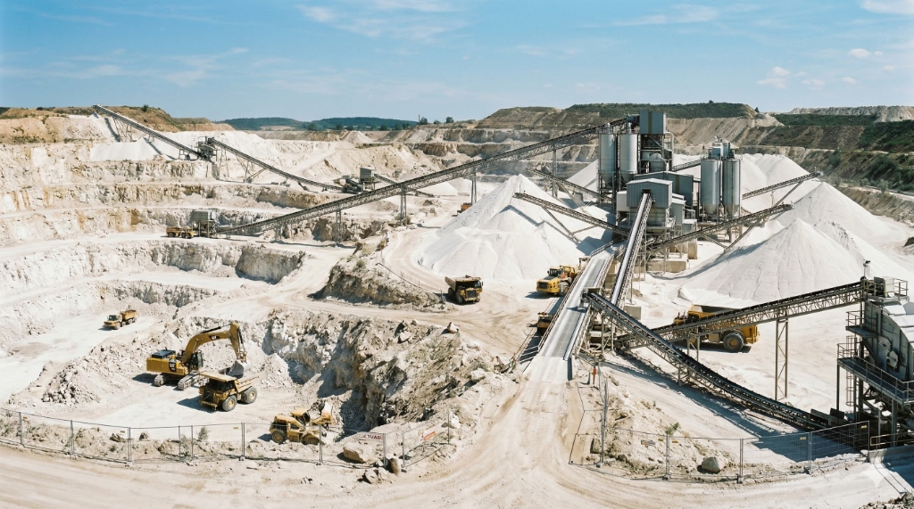
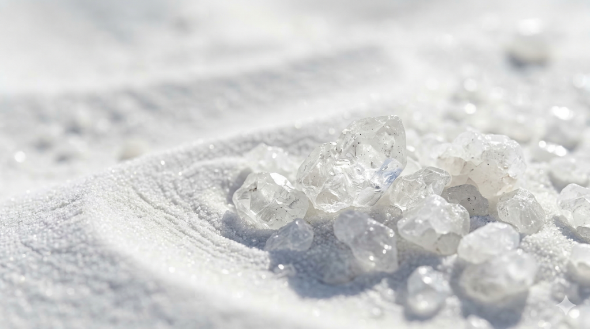
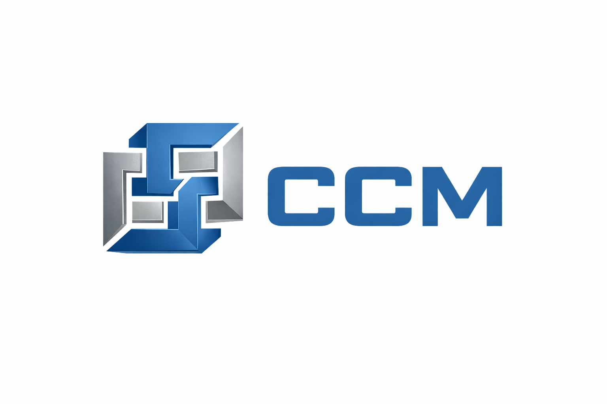

Мы добываем и обрабатываем кварц высшего качества для металлургии, производства стекла, электроники и строительных материалов. Надежность, экологичность, точность – основа нашего бизнеса.
Кварц – один из самых востребованных минералов в мире. ООО Архар Кварц обеспечит стабильные поставки высокочистого сырья для предприятий России и зарубежья. Наше месторождение в Архангельской области в районе населённого пункта «Усть-Очея» гарантирует низкое содержание примесей и стабильный химический состав.
Обсудить сотрудничествоСнабжать промышленность качественным кварцевым сырьём, сохраняя баланс между эффективностью добычи и бережным отношением к природе.

| Тип продукта | Описание | Применение |
|---|---|---|
| Кварцевый песок | Высокочистый песок с низким содержанием Fe₂O₃ и Al₂O₃ | Производство стекла, керамики, фильтрующих материалов |
| Кварцевый концентрат | Обогащённый кварц с содержанием SiO₂ до 99.8% | Металлургия, производство кремния, огнеупоров |
| Кварцевая крошка | Дроблёный кварц для строительных смесей | Бетон, штукатурки, декоративные покрытия |
| Формовочный кварц | Высокочистый песок (свыше 90–95% SiO₂) | Создание литейных форм и стержней |
| Молотый кварц (порошок) | Микронизированный кварц для высокотехнологичных применений | Электроника, композиты, лакокрасочная промышленность |
Геологоразведка. Изучено 44,5 км².
Прохождение государственной экспертизы и формирование первооткрывательства.
Получение разрешения и начало добычи.
В эпоху цифровизации и зелёной трансформации инвесторы всё чаще ищут активы, которые не просто приносят прибыль — но и устойчиво востребованы в ключевых отраслях экономики. Один из таких активов — кварцевый песок.
Несмотря на свою простоту, этот минерал — основа стекла, полупроводников, стройматериалов и солнечных панелей. И его спрос растёт стабильно и многократно — не как модный тренд, а как фундаментальная потребность технологического прогресса.

Сегодня 70% мирового производства высокочистого кварца (SiO₂ > 99%) сосредоточено в нескольких странах: США, Китай, Бразилия.
Но:
Это не «песок в куче». Это ключевой компонент солнечной энергетики, цифровых чипов, устойчивого строительства и экологичного производства.
Те, кто уже сейчас владеет чистым, доступным и сертифицированным кварцевым сырьём.
Наш менеджер свяжется с вами для уточнения деталей.

Поставщик оборудования по обогащению и переработке кварца
Контроль качества продукции
Геологоразведка
г. Москва, Пресненская набережная, д. 8, стр. 1
Месторождение: Архангельская область, район «Усть-Очея»
Пн–Пт: 9:00 – 18:00 (по Москве)
Сб–Вс: выходной